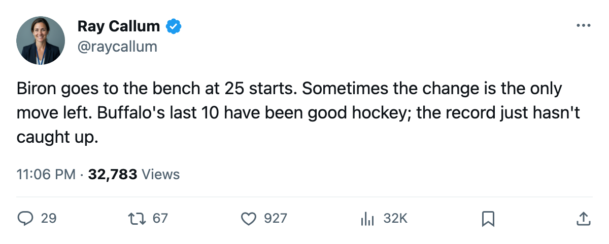
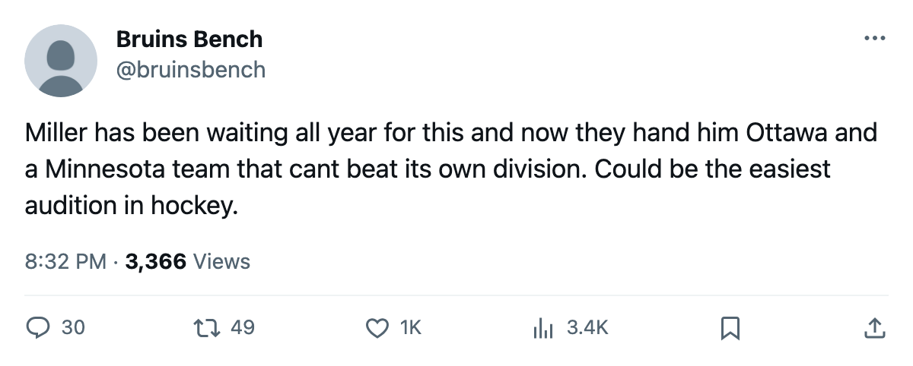

Goalie Watch: Buffalo Sits Biron After 25 Starts and Puts Miller In
The Sabres are four points out of 8th in the East and the coach made his move at the crease
 Ray CallumSenior correspondent · Home Ice Network
Ray CallumSenior correspondent · Home Ice Network
 Martin Biron84 [75] is out of the lineup.
Martin Biron84 [75] is out of the lineup.  Ryan Miller76 [393] starts.
Ryan Miller76 [393] starts.  Buffalo Sabres benched their starting goaltender after 25 games and elevated Miller, who had appeared in 6 games this season.
Buffalo Sabres benched their starting goaltender after 25 games and elevated Miller, who had appeared in 6 games this season.
The Sabres are 10-14-2 and sit 11th in the Eastern Conference at 34 points. Four points separate them from 8th-place  Carolina Hurricanes. They scored 84 goals in 32 games and gave up 87, a minus-3 differential that says they have not been able to pull away or get pulled away from anyone.
Carolina Hurricanes. They scored 84 goals in 32 games and gave up 87, a minus-3 differential that says they have not been able to pull away or get pulled away from anyone.
The crease was the issue
Biron carried 78% of Buffalo's 32 games. Miller logged 6 starts.  Mika Noronen76 [726] moves from undressed to the backup spot.
Mika Noronen76 [726] moves from undressed to the backup spot.
The move comes during a 2-game winning streak. Buffalo beat  Montreal Canadiens 3-2 in overtime on December 21, a game in which Biron faced 21 shots. The Sabres have allowed 20 goals across their last 10, a number that sits among the lowest in the league over that stretch, but the wins still have not come fast enough to move them up.
Montreal Canadiens 3-2 in overtime on December 21, a game in which Biron faced 21 shots. The Sabres have allowed 20 goals across their last 10, a number that sits among the lowest in the league over that stretch, but the wins still have not come fast enough to move them up.
The schedule offers two games they should win
Buffalo Sabres hosts  Ottawa Senators on December 26. Ottawa is 9-14-7, last in the Northeast, and on a 3-game losing streak. The season series between these two clubs stands at 1-1, decided on a combined goal differential of 4-3 in Buffalo's favour. Buffalo then welcomes
Ottawa Senators on December 26. Ottawa is 9-14-7, last in the Northeast, and on a 3-game losing streak. The season series between these two clubs stands at 1-1, decided on a combined goal differential of 4-3 in Buffalo's favour. Buffalo then welcomes  Minnesota Wild on December 28, a club that has won 3 of 12 Northwest division games this season.
Minnesota Wild on December 28, a club that has won 3 of 12 Northwest division games this season.
 Miroslav Satan73 [880] is targeted to return from his ankle on December 25, a day before the Ottawa game.
Miroslav Satan73 [880] is targeted to return from his ankle on December 25, a day before the Ottawa game.  Scott Hartnell79 [367] (groin, back January 7) and
Scott Hartnell79 [367] (groin, back January 7) and  Ales Kotalik76 [508] (hand, back January 30) remain out for weeks.
Ales Kotalik76 [508] (hand, back January 30) remain out for weeks.

